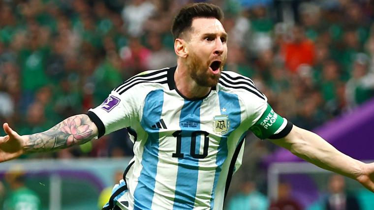

Lionel Andrés Messi Cuccittini,nato il 24 giugno 1987 a Rosario, in Argentina, e ha mostrato fin da piccolo un talento straordinario per il calcio. A soli 13 anni si è trasferito in Spagna per entrare nella prestigiosa "La Masia," l'accademia giovanile del FC Barcellona. Dopo anni di duro allenamento, ha debuttato con la prima squadra del Barcellona, diventando rapidamente una stella. Durante la sua carriera, Messi ha vinto innumerevoli premi e trofei, stabilendo record incredibili e diventando un'icona mondiale. Nonostante il successo, è noto per la sua umiltà e dedizione al gioco.

Esplora le pagine per saperne di più sulla sua carriera e i suoi incredibili successi.